这其实是我大三上的时候做的一个课程设计,设计工具是用Rational Rose2007(后来发现Bouml更轻量好用)。当时觉得做的比较有意思，所以就当博客写上来了。当时的报告文档好像找不到了，UML设计图还在。就先把题目和设计图放上来吧，文字以后慢慢加吧...
Project Assignment
1. Project Assignment: Design of a Web-based Documentation Service System
2. Functional Requirements :
- allow users to apply for opening/closing an Account
- allow user to submit a service request for following services
- document translation service
- online dictionary look-up in different languages
- proof-reading service
- allow user to view/change/cancel service requests that have been submitted
- allow user to pay cost online
- allow sys admin to open/close a user account
- allow sys admin to perform user account administration work
- allow sys admin to do database maintenance work
3. Design Requirements :
- use OO methodology to complete the preliminary design
- use UML and any CASE tool/modeler as your design environment
- in the design, you need to accomplish the following tasks
- create Use Cases to cover all functional requirements
- identify major components/subsystems in your system
- accomplish class design
- design public method interface for each class and describe its function
- identify and describe the major association/interaction among the components or classes
- create sequence diagrams to show the call sequences/data flow for all Use Cases
- use CASE tool to generate the design documents
UML Design
1. Use Case Diagram
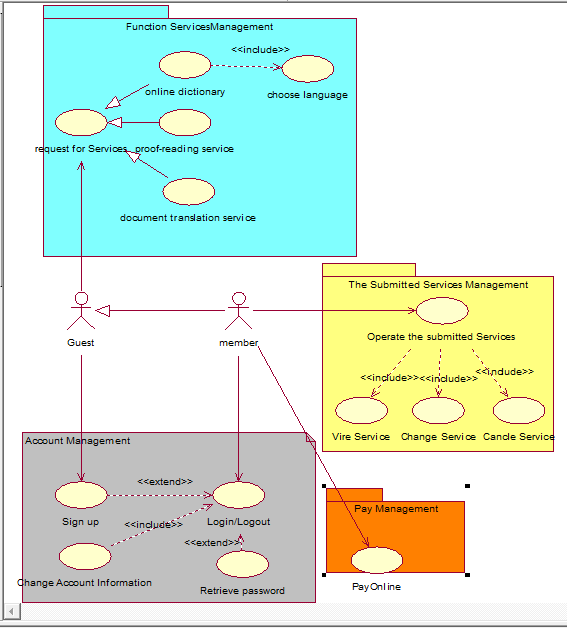1.1User use case diagram
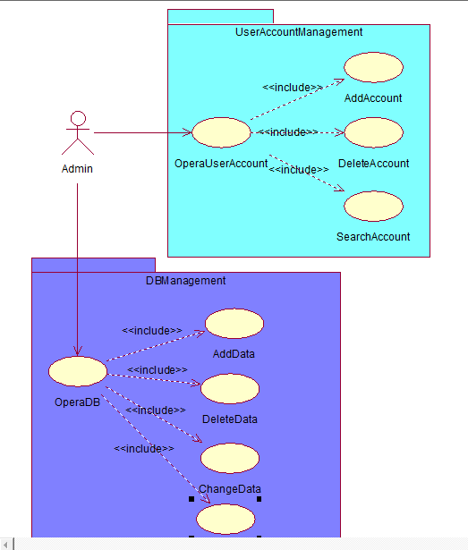
1.2 Admin use case diagram
2. Class Diagram
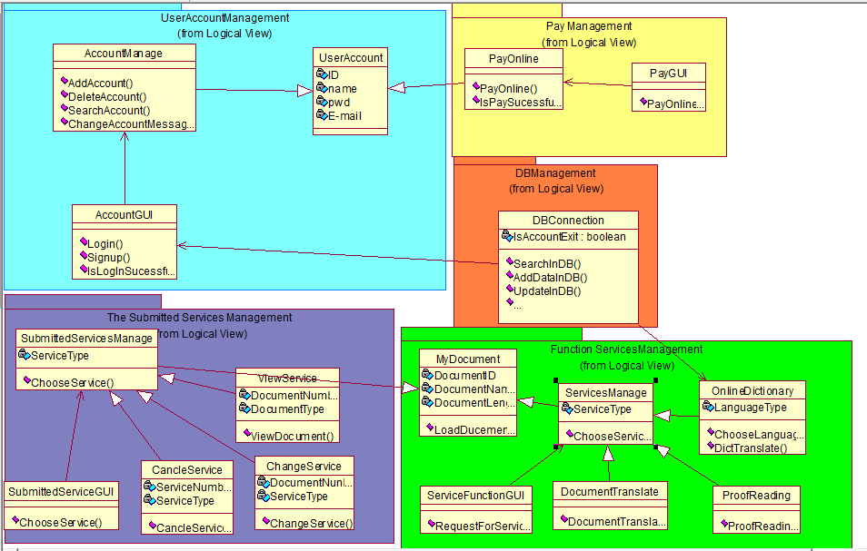2.1 class diagram
3. Sequence Diagram
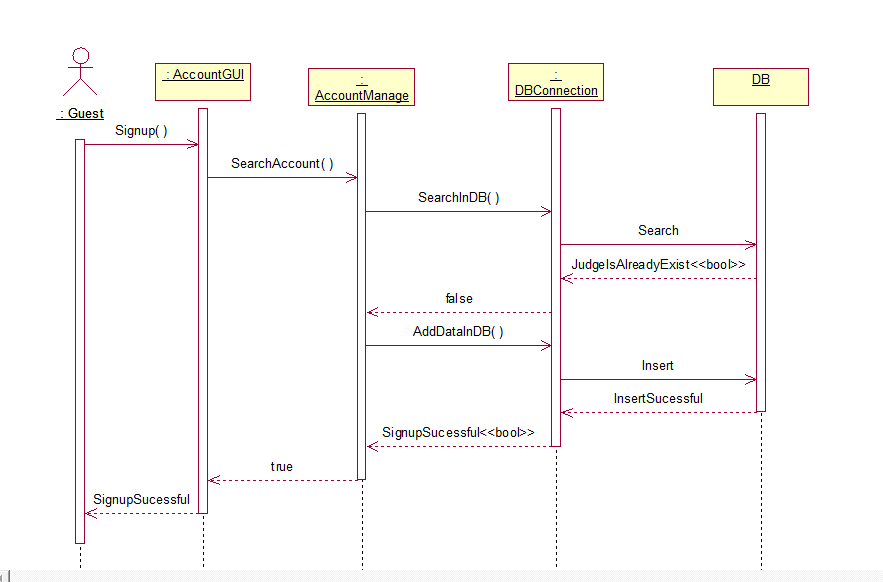3.1 reg
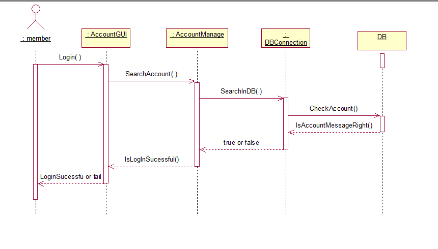
3.2 login
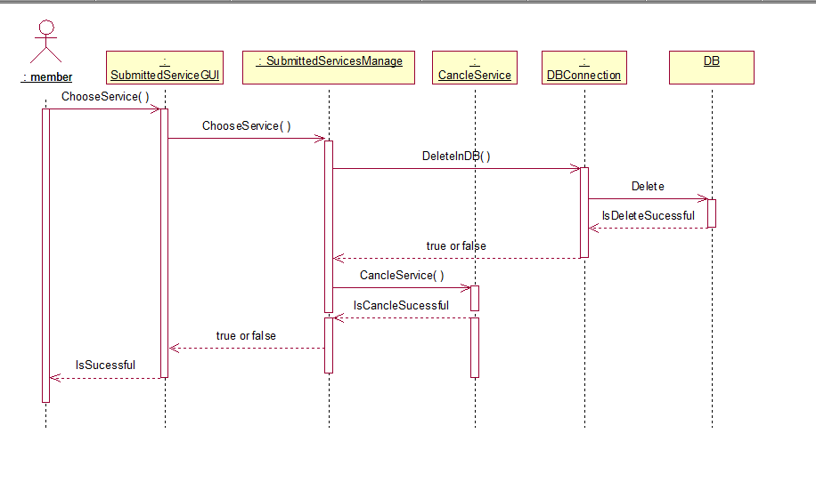
3.3 cancle service
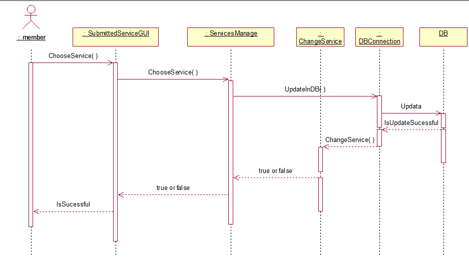
3.4 change service
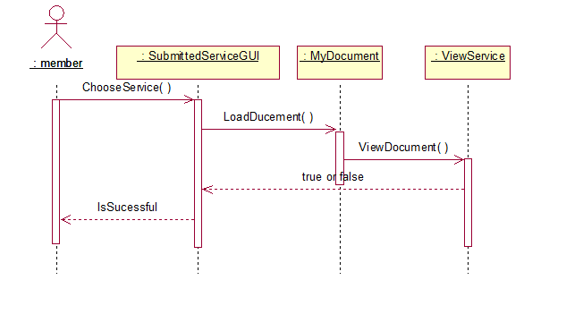
3.5 view service
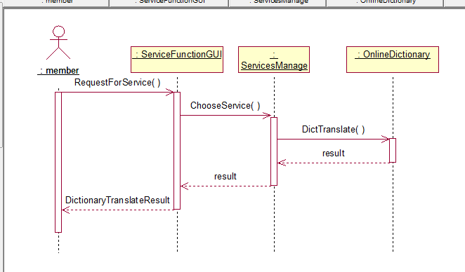
3.6 dictionary translate
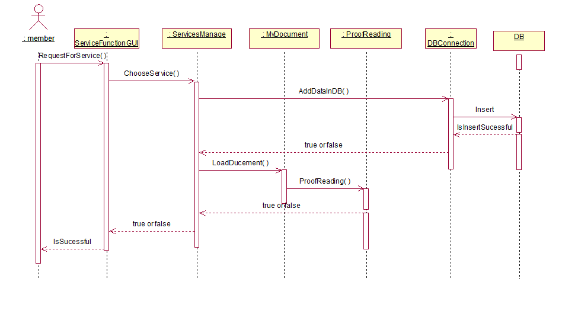
3.7document correct
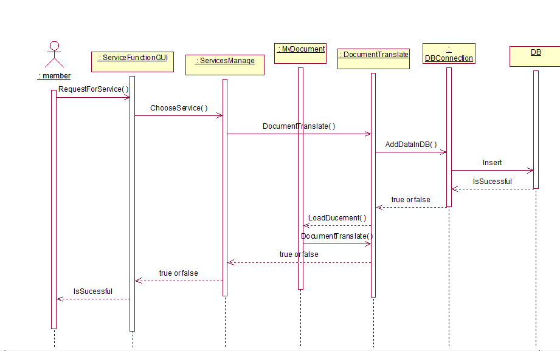
3.8 document translate
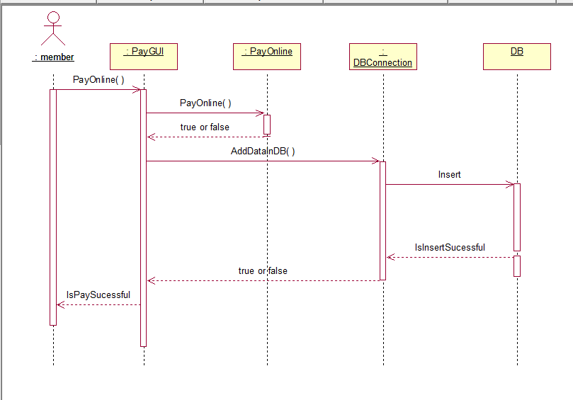
3.9 online pay
4. Deployment Diagram and Component Diagram
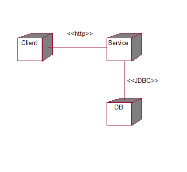4.1 deployment diagram
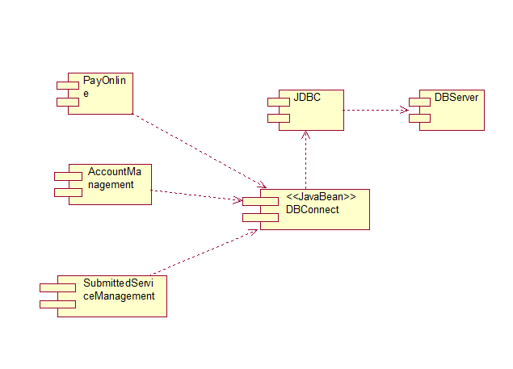
4.2 component diagram